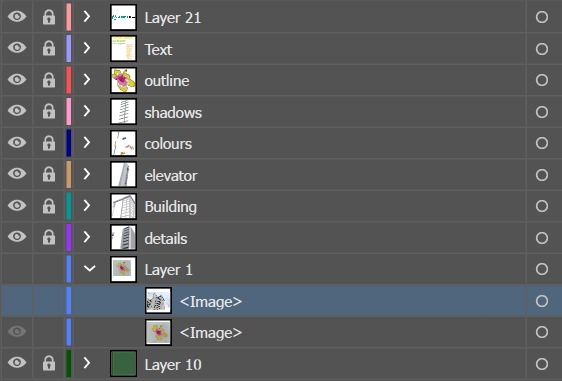
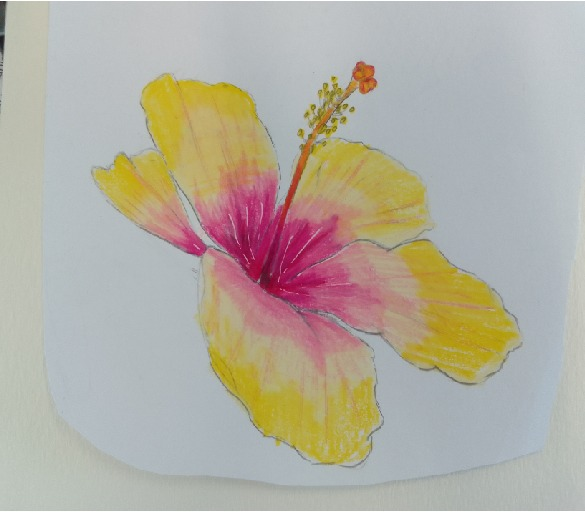
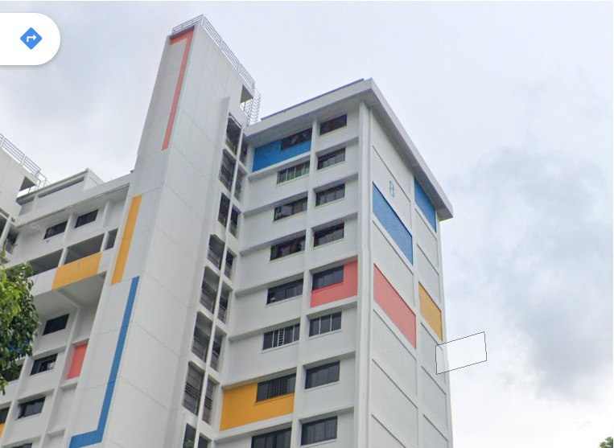

City In Nature
In this project, I was tasked with making an EDM for one of the Singapore Green Plan pillars.
In this EDM, I utilized the design rule of emphasis to capture the viewer's attention with the bright yellow flower. This was entirely done using Illustrator. From this project, I have learned the importance of colour schemes, as it was quite difficult for me to choose colours that blended well together and did not disrupt readability.
I also took reference pictures of buildings in my town and sketched the flower by tracing over it to simplify the process.
From this project, I have learned the importance of colour schemes, as it was quite difficult for me to choose colours that blended well together and did not disrupt readability.